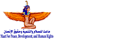

نحن ندعمك
مرحبا بك، سعداء باهتمامك وتواصلك معنا عبرهذا التطبيق. نشعر بك وندعمك أينما كنت
يمكنك اختيار أحد النطاقات اآلتية وفقا لما تشعر به وترغب في التحدث حوله:
هل أنت مصاب بفيروس كوفيد 19؟
نعم
لا
لا اعرف
هل أنت ملزم حاليا بالعزل المنزلي وتريد معرفة المزيد حوله؟
نعم
لا
هل تشعر بالملل وتريد بعض وسائل الترفيه؟
نعم
للتخلص من التوتر ننصحط بزيارة قسم )نتضامن معك( ستجد كل ما تحتاج
نعم
ترغب في التحدث إلي أحد القادة الدينيين
نعم
نتمني لك الصحة الجيدة .. ابق في منزلك، كن في امان